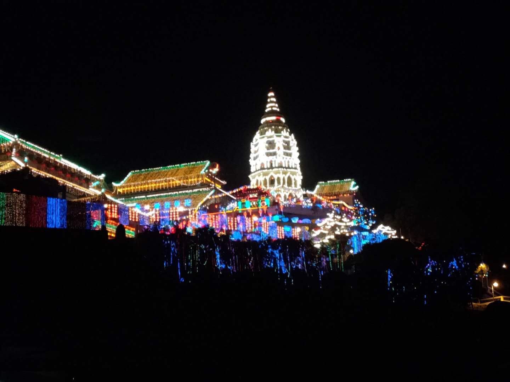
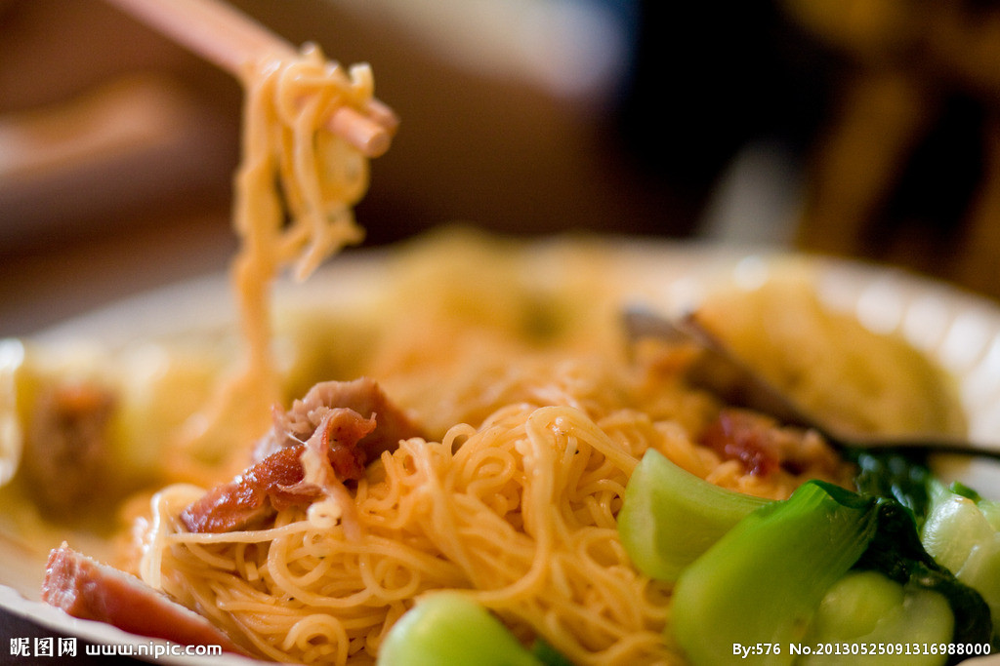
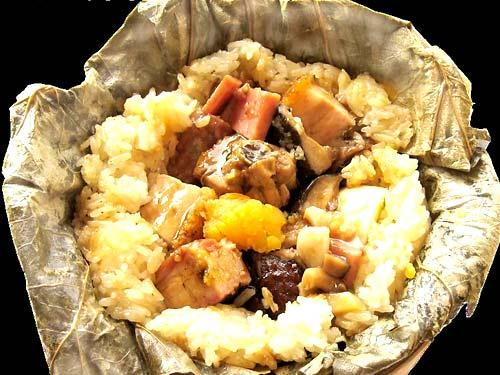

滨城，马来西亚十三个联邦之一，位于西马来西亚西北部。位于马六甲海峡的整个槟城被滨城海峡分成两部分：滨岛和威省。滨城提供的旅游方面较为全面，除了古迹游，探索美食及海滩，另外还有生态旅游，展览与会议。滨城在2014年获得‘全球40大最佳旅游景点’美誉，在排名中后的第八名。
升旗山，升旗山，又名槟榔山，位于槟岛中部，主峰西方山海拔833米，是槟城的最高点。 其中海拔735米的旗山是升旗山群峰中被开发最多的山峰，也是当地居民和游客的避暑胜地。由于过去英国高官的别墅大多数在这里，山下的士兵利用旗语传递重要讯息，升旗山因而得名。 升旗山山间的气候凉爽宜人，是槟城著名的旅游胜地。
蝴蝶公园，槟城蝴蝶园建于1986年,是世界第一座热带蝴蝶公园。园内的蝴蝶全部生活在自然的生活环境中。目前蝴蝶园拥有120多种蝴蝶品种，共四五千只，除此之外，还有部分其它种类的昆虫。这些蝴蝶在蝴蝶园中自有地生活，翩翩起舞，共同构成了一副美丽的图画，令人眼花缭乱。蝴蝶园中还设有百合花池、人造瀑布及岩石景区，蝴蝶的绚丽多姿吸引了无数的游客前来一睹其风采，成为了槟城观光的圣地。
< img src="3.jpg"alt="houzi">猴子沙滩， 猴子海滩依傍槟城国家公园而建, 比Batu Feringghi海滩及金银岛海滩要安静偏僻得多, 乘船或者步行可到达. 槟城西北部角, 占地面积2563公顷的公园里是一系列受保护的栖息地, 一些原始海滩甚至还有一些殖民地时代的灯塔. 猴子海滩以栖息此地的蟹食猴命名, 在这里如果幸运还可以看到飞鼠、狐猴和白腹海雕. 沙滩边也有卖吃的.
印度飞饼，印度煎饼是种圆扁形的煎饼，是马来西亚嘛嘛档的一种受欢迎的食物。它被用来当早餐、午餐、下午茶与晚餐。常被用来与拉茶或冰茶配着一起吃。普遍上是配着达尔酱或咖喱与小风尾鱼热辣酱料一起吃。 印度煎饼的马来语是roti canai。
 咖喱面，咖喱面，又称咖喱叻沙，是一道由马来人、华人、娘惹等不同文化混合的面食料理。因马来半岛上有许多不同族群，加上地理分隔，造成不同族群及不同地方的咖喱面都会有所不同，但是基本的原料是相同的。 咖喱面最大的特色是使用加了椰奶的咖喱汤头，味道较为浓郁。  糯米鸡，糯米鸡是源自广东的一种点心.。制法是以荷叶包着糯米，中央放鸡肉、叉烧肉、咸蛋黄、冬菇等馅料。 传统的糯米鸡的分量不少，吃一个糯米鸡已差不多是半顿饭量。因此约1980年代起的广东酒楼推出材料相同，而体积小一半的珍珠鸡。另一种和糯米鸡相似的点心是荷叶饭。两者外形相似，但荷叶饭是以粘米而不是糯米制成。